Simple Linear Regression
FMB819: R을 이용한 데이터분석
고려대학교 경영대학 정지웅
Today’s Agenda
단순 선형 회귀 모형(Simple Linear Regression Model) 및 최소제곱법(Ordinary Least Squares, OLS) 추정 소개.
실증 분석: 코스피200 지수와 S&P500 지수의 관계
코스피200 지수와 S&P500 지수
“S&P500이 움직일 때 코스피200이 얼마나 같이 움직이는가?”
이번 예시에서는 웹에서 코스피200/ S&P500 일별 종가를 불러와 수익률을 계산함.
실습에서는 두 관계를 함께 봄:
- 당일 관계: \(r^{KOSPI200}_t\) vs \(r^{SP500}_t\)
- 익일 관계: \(r^{KOSPI200}_{t+1}\) vs \(r^{SP500}_t\)
Task 1
- 코스피200 및 S&P500 일별 종가 데이터를 불러와 날짜를 기준으로 두 지수를 병합한 뒤,
merged_px객체를 생성하시오. 그리고 일별 수익률 변수(ret_sp500,ret_kospi200,ret_kospi200_lead)를 생성하시오. (inner_join)
데이터셋 설명:
총 몇 개의 관측치가 있는가?
데이터셋을 확인하고 어떤 변수가 있는지 확인하시오.
skimr패키지의skim함수 사용해서 생성한 수익률 변수에 대한 기본적인 요약 통계 확인.
힌트:
dplyr의select사용해서 변수 선택한 후%>%로skim()적용하면 됨.
- S&P500 수익률(
ret_sp500)과 코스피200 수익률(ret_kospi200,ret_kospi200_lead)의 상관관계는?
코스피200 지수와 S&P500 지수: Scatter plot

- S&P500 수익률을 구간(bin)으로 묶어 평균 관계를 더 명확하게 살펴보자.
코스피200 지수와 S&P500 지수: Binned Scatter Plot
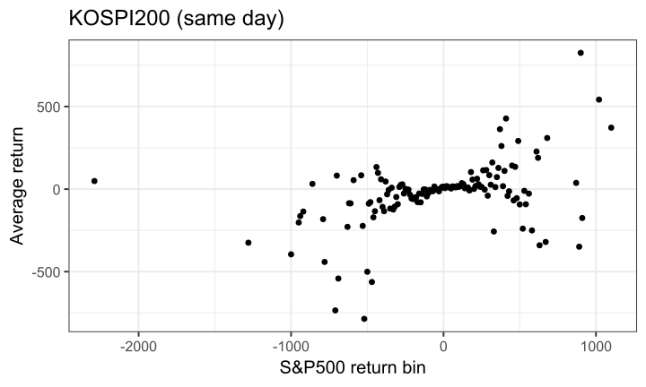
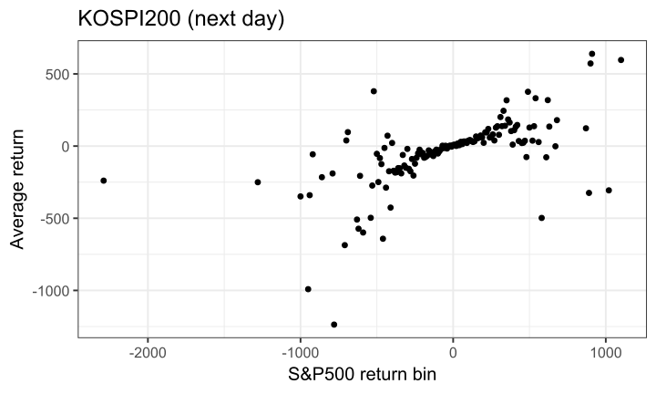
코스피200 지수와 S&P500 지수: Regression Line
코스피200 지수와 S&P500 지수의 관계를 시각적으로 요약하는 방법: 산점도를 통과하는 선(Line)
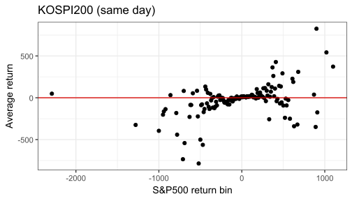
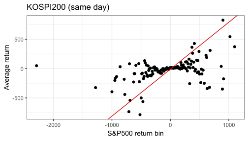
- 어느 선이 더 나은가? 어떤 기준으로 더 나은가?
단순 선형 회귀 (Simple Linear Regression)
지금까지 분석을 정리하자면
두 변수 간의 관계에 관심 있음:
결과변수 (종속변수, dependent variable): KOSPI200 return \((y)\)
설명변수 (독립변수, independent variable): S&P500 return \((x)\)
각 거래일 \(i\)에 대해 \(x_i\)와 \(y_i\)를 관측할 수 있음. 예, S&P500 수익률과 코스피200 수익률의 결합 분포(joint distribution)를 관찰.
회귀선은 이 관계를 선(line) 하나로 요약하고 있음. 절편 \(b_0\)와 기울기 \(b_1\)을 갖는 선의 방정식은 다음과 같음: \[ \widehat{y}_i = b_0 + b_1 x_i \]
\(\widehat{y}_i\)는 관측값 \(i\)에서의 예측값(prediction)을 의미함. 즉, 주어진 회귀 직선에 따라 우리가 \(y_i\)를 어떻게 예측하는지 보여줌.
직선의 방정식
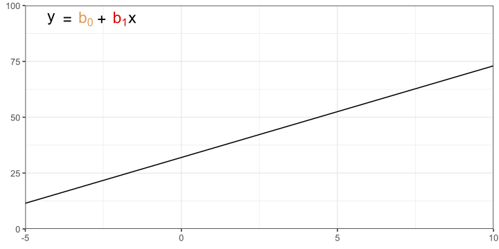
직선의 방정식
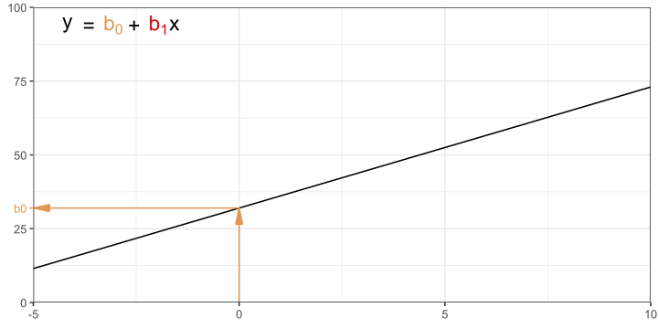
직선의 방정식
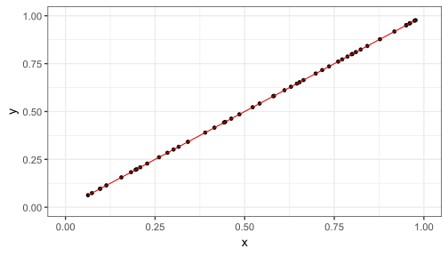
Simple Linear Regression: 잔차(Residual)
- 만약 모든 데이터가 직선 위에 있다면, \(\widehat{y}_i = y_i\).
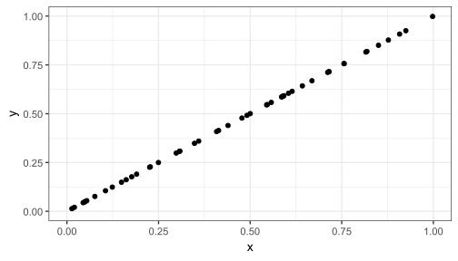
Simple Linear Regression: 잔차(Residual)
- 만약 모든 데이터가 직선 위에 있다면, \(\widehat{y}_i = y_i\).
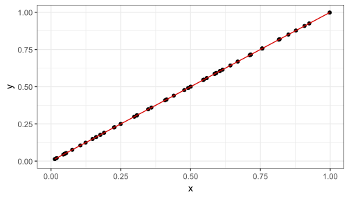
Simple Linear Regression: 잔차(Residual)
만약 모든 데이터가 직선 위에 있다면, \(\widehat{y}_i = y_i\).
대부분의 경우 종속변수 \((y)\)는 우리가 선택한 독립변수 \((x)\)들에 의해서만 완벽히 설명되지 않음, \(\widehat{y}_i \neq y_i\). 실제 값과 예측 값의 차이를 잔차(residual)라 부름. 즉 \(y_i - \widehat y_i = e_i\)
실제 데이터 \((x_i, y_i)\)는 따라서 예측값 + 잔차로 표현될 수 있음.
\[ y_i = \widehat y_i + e_i = b_0 + b_1 x_i + e_i \]
Simple Linear Regression: Graphically 1
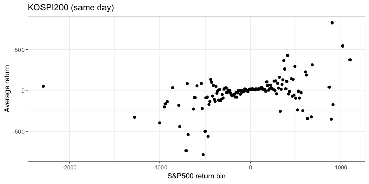
Simple Linear Regression: Graphically 2
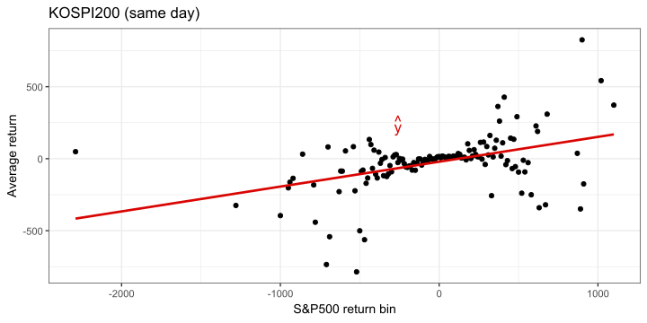
Simple Linear Regression: Graphically 3
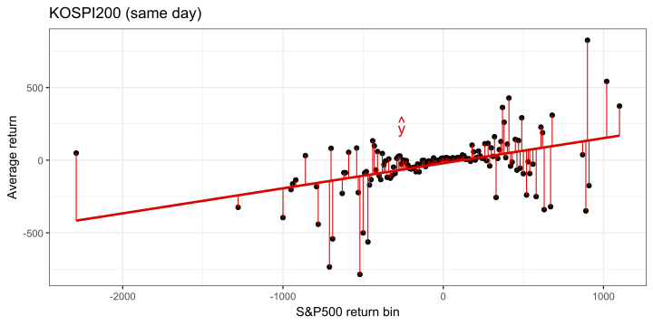
Simple Linear Regression: Graphically 4

무엇을 “최소화”하는 직선을 구해야할까?
Ordinary Least Squares (OLS) 추정
잔차는 +/- 값이 있어 서로 상쇄됨. 따라서 제곱 잔차(squared residuals)를 고려 \[\forall i \in [1,N], e_i^2 = (y_i - \widehat y_i)^2 = (y_i - b_0 - b_1 x_i)^2\]
\(\sum_{i = 1}^N e_1^2 + \dots + e_N^2\) 값이 최소화하는 \((b_0, b_1)\) 값을 선택.
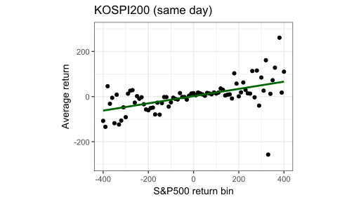
Ordinary Least Squares (OLS) 계수 공식
OLS: 잔차 제곱합(squared residuals)을 최소화하는 추정 방법.
절편 \(b_0\)와 기울기 \(b_1\)의 공식, 하나의 독립변수만 있는 경우:
기울기 (Slope): \(b_1^{OLS} = \frac{cov(x,y)}{var(x)}\)
절편 (Intercept):\(b_0^{OLS} = \bar{y} - b_1\bar{x}\)
- 잔차 제곱합을 최소화하는 문제를 풀어 유도됨.
자세한 수학적 과정은 [여기]에서 확인.
Ordinary Least Squares (OLS) 해석
절편 \((b_0)\): \(x = 0\)일 때 예측된 \(y\) 값 \((\widehat{y})\).
기울기 \((b_1)\): \(x\)가 한 단위 증가할 때, \(y\) 값이 평균적으로 변하는 정도
두 변수 간 “관련이 있음(associated)”이라는 표현을 사용함.
즉, \(b_1\)을 \(x\)의 \(y\)에 대한 인과적 영향으로 해석하면 안 됨.
이를 주장하려면 특정 조건이 충족되어야 함.또한 \(x\)의 단위(unit)에 따라 \(b_1\)의 해석과 크기(magnitude)가 달라질 수 있음.
\(x\)의 단위가 무엇인지 명확히 해야 함
OLS with R
- OLS는
lm함수를 사용하여 추정가능
코스피200 지수와 S&P500 지수
- 다음과 같은 선형 모형을 OLS로 추정: \(\textrm{KOSPI200 return}_i = b_0 + b_1 \textrm{S&P500 return}_i + e_i\)
Ordinary Least Squares (OLS): Prediction
##
## Call:
## lm(formula = ret_kospi200_mean ~ ret_sp500_bin, data = returns_bin)
##
## Coefficients:
## (Intercept) ret_sp500_bin
## -20.9828 0.1725이 결과가 의미하는 것 (\(i\) 첨자 생략):
\[ \begin{aligned} \widehat y &= b_0 + b_1 x \\ \widehat {\text{KOSPI200 return}} &= b_0 + b_1 \cdot \text{S&P500 return} \end{aligned} \]
S&P500 수익률이 30bp일 때 예상되는 코스피200 수익률은?
\[ \begin{aligned} \widehat {\text{KOSPI200 return}} &= b_0 + b_1 \cdot 30 \end{aligned} \]
Task 2
- 익일 코스피200 평균 수익률(
ret_kospi200_lead)을 S&P500 수익률에 대해 회귀분석 수행. 회귀 계수(coefficients)를 해석하시오.
- 이 회귀분석에서 OLS 계수 \(b_0\) 및 \(b_1\)을 직접 계산 (공식 이용).
힌트:cov,var,mean함수 사용.
- S&P500 수익률이 0bp일 때, 예측된 익일 코스피200 수익률은 얼마인가?
- S&P500 수익률이 30bp일 때, 예측된 익일 코스피200 수익률은 얼마인가?
예측값과 잔차의 성질
\(\widehat{y}_i\)의 평균은 \(\bar{y}\)와 같음 \[\begin{align} \frac{1}{N} \sum_{i=1}^N \widehat{y}_i &= \frac{1}{N} \sum_{i=1}^N b_0 + b_1 x_i \\ &= b_0 + b_1 \bar{x} = \bar{y} \end{align}\]
잔차의 평균(또는 합)은 0. \[\begin{align} \frac{1}{N} \sum_{i=1}^N e_i &= \frac{1}{N} \sum_{i=1}^N (y_i - \widehat y_i) \\ &= \bar{y} - \frac{1}{N} \sum_{i=1}^N \widehat{y}_i \\\ &= 0 \end{align}\]
설명 변수(regressor)와 잔차는 정의상 서로 상관이 없음.
\[Cov(x_i, e_i) = 0\]
예측값과 잔차는 상관이 없음.
\[\begin{align} Cov(\widehat y_i, e_i) &= Cov(b_0 + b_1x_i, e_i) \\ &= b_1Cov(x_i,e_i) \\ &= 0 \end{align}\]
이는 \(Cov(a + bx, y) = bCov(x,y)\)라는 성질 때문.
선형성 가정: 데이터 시각화의 중요성
공분산(covariance), 상관계수(correlation), 그리고 단순 OLS 회귀는 두 변수 간 선형 관계(linear relationships)만 측정한다는 점을 기억해야 함.
서로 완전히 동일한 상관계수 및 회귀선을 갖는 두 개의 데이터셋이 완전히 다르게 보일 수도 있음.
선형성 가정: Anscombe의 예제
- Francis Anscombe (1973)는 통계적으로 완전히 동일한 네 개의 데이터셋을 만들었음. 하지만 시각적으로 보면 완전히 다름!
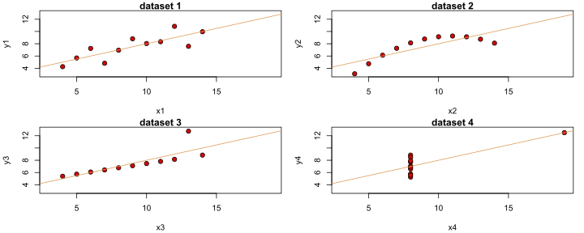
| dataset | cov | var(y) | var(x) |
|---|---|---|---|
| 1 | 5.501 | 4.127 | 11 |
| 2 | 5.500 | 4.128 | 11 |
| 3 | 5.497 | 4.123 | 11 |
| 4 | 5.499 | 4.123 | 11 |
데이터에서 비선형 관계?
회귀 분석에서 비선형 관계를 반영할 수 있음.
고차항(higher order term)을 추가하면 됨.
\[ y_i = b_0 + b_1 x_i + b_2 x_i^2 + e_i \]이는 다중 회귀(multiple regression)의 한 형태임.
- 예를 들어, 아래 데이터에 다중 회귀 모델을 적용할 수 있음:
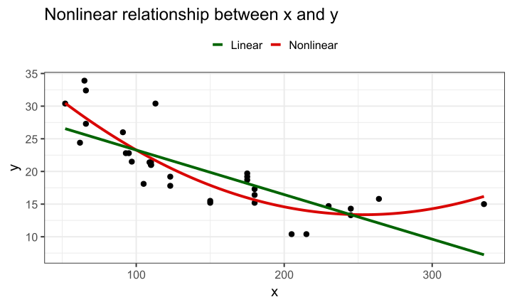
분산 분석 (Analysis of Variance)
다음 관계를 기억할 것: \[ y_i = \widehat{y}_i + e_i \]
이를 기반으로 다음과 같은 분산 분해(variance decomposition)를 얻음: \[\begin{align} Var(y) &= Var(\widehat{y} + e)\\ &= Var(\widehat{y}) + Var(e) + 2 Cov(\widehat{y},e)\\ &= Var(\widehat{y}) + Var(e) \end{align}\]
총 변동 (SST) = 모델이 설명한 변동 (SSE) + 설명되지 않은 변동 (SSR)
왜냐하면:
- \(Var(x+y) = Var(x) + Var(y) + 2Cov(x,y)\)
- \(Cov(\hat{y},e) = 0\)
적합도 평가 (Goodness of Fit)
- \(R^2\) 값은 모델이 데이터를 얼마나 잘 설명하는지(fit) 측정하는 지표.
\[ R^2 = \frac{\text{variance explained}}{\text{total variance}} = \frac{SSE}{SST} = 1 - \frac{SSR}{SST}\in[0,1] \]
\(R^2\) 값이 1에 가까울수록, 모델의 설명력이 높음.
\(R^2\) 값이 0에 가까울수록, 모델의 설명력이 낮음.
예를 들어, \(R^2 = 0.5\)이면, \(x\)의 변화가 \(y\)의 변화 중 50%를 설명함.
낮은 \(R^2\) 값이 무조건 모델이 쓸모없다는 뜻은 아님! 예측(predictive power)보다는 인과적 메커니즘(causal mechanisms)에 더 초점을 맞추는 경우.
\(R^2\) 값은 인과 관계(causal relationship)를 나타내는 지표가 아님! 회귀 모델에서 높은 \(R^2\) 값이 있다고 해서, \(x\)가 \(y\)를 인과적으로 설명한다고 볼 수 없음!
Task 3
- 코스피200 수익률을 S&P500 수익률에 대해 회귀(regress)하고 결과를
kospi_reg객체에 저장.
summary(kospi_reg)를 실행하여 (다중) \(R^2\) 값을 확인함. 이 값의 의미를 해석할 것.코스피200 수익률을 S&P500 수익률 간 상관계수(correlation)를 제곱하여 계산. 참고: 이 값은 단일 설명변수를 가진 회귀에서 \(R^2\)와 상관계수 간의 관계를 보여줌.
- 1번과 2번을 익일 코스피200 수익률에 대해 반복.
당일 코스피200 수익률과 익일 코스피200 수익률 중 어떤 결과가 S&P500 수익률 변화로 더 많이 설명되는지 비교하시오.
(Optional)
broom패키지를 설치 및 로드한 후,augment(kospi_reg)를 새로운 객체에 저장.
ret_kospi200_lead의 분산(SST)과 예측값의 분산(SSE)을 사용하여 \(R^2\) 값을 직접 계산하시오. (이전 슬라이드의 공식을 참고할 것.)broom패키지의augment()함수는 회귀 결과에 예측값과 잔차를 추가하는 데 사용됨.